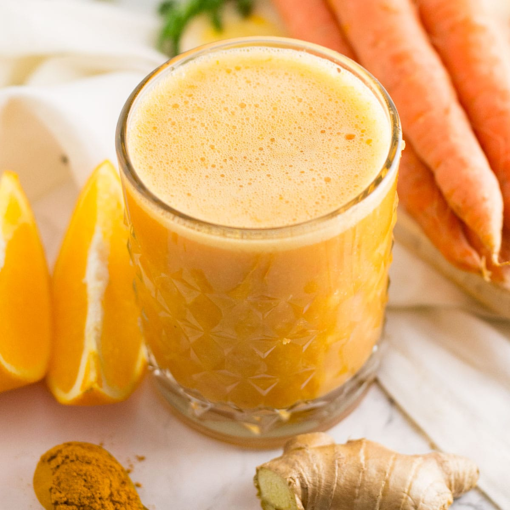
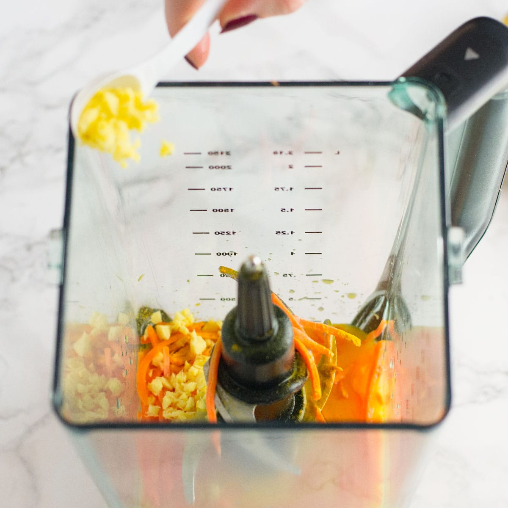

Immune Boosting Orange Smoothie


Description
Healthy ingredients like ginger, carrot, and turmeric make this immune boosting smoothie
recipe great for your health! This orange blend will give you the power you need to fight off any
cold or flu this season.
Note: The banana is added for creaminess; however, if you prefer smoothies without bananas, try
substituting with 1 cup of ice and a half cup yogurt for creaminess.
Ingredients
- 1 cup orange juice-fresh squeezed is best
- 1 banana
- 1.5 teaspoon ginger-minced
- ½ teaspoon tumeric powder
- ½ cup carrots-shredded or diced
Steps
- Place all ingredients in a blender
- Blend until smooth
- Pour into glass and enjoy immediately!
Healthy Benefits
Oranges
- High in vitamin C
- Provides gut and health protective fiber
- Anti-inflammatory, antiviral, antimicrobial
- Protects cells from damage
- Helps your body make collagen
Ginger
- Amazing cold and flu relief
- Helps with digestion and nausea
- Powerful anti-inflammatory
Carrots
- Great source of vitamins A, K, and C
- Packed with antioxidants, especially beta-carotene
- The fiber content helps keep blood sugar levels under control
Tumeric
- Great metabolism booster
- Proven to prevent cancer
- Protects against Alzheimer's disease
- Potent anti-inflammatory
- May improve symptoms of depression and arthritis
Bananas
- A great source of several essential nutrients, including potassium, magnesium, fiber and more.
- An ideal food for athletes and those who exercise regularly thanks to their concentration of quick-acting carbohydrates.
- Bananas contain a convenient source of energy perfect for right before a workout
- Rich in vital post-workout nutrients that can help repair muscle tissues and balance water retention.
- Caution! Bananas contain a high amount of sugar and carbohydrates. They can quickly spike blood sugar levels.
Nutrition Facts
Servings Per Recipe: 1
Calories: 250
Protein 3.7g, Carbohydrates 60.1g, Saturated fat 0.3g, Sugar 38g, Sodium 42mg, Potassium 1146mg